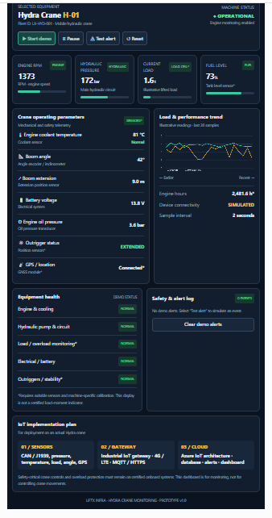

SIMULATED · Real telemetry: not connected
Open monitoring →TECHNOLOGY / CRANE IOT MONITORING
Your fleet. One monitoring view.
A 12-crane example fleet with individual monitoring views for ACE Hydra, Escorts Kubota / Farana, TIL and Manitowoc. Sample IDs and statuses are illustrative; the fleet can be adjusted to your actual inventory. Model names identify the intended survey scope, not verified integrations.
DEMO DATA ONLY — NO LIVE CRANE CONNECTED. Every value, chart point, condition label and event below is simulated in your browser. Live readings: unavailable. This is a monitoring prototype, not a certified load-moment indicator, safe-load indicator or crane control system.
Sensor & gateway design · Signal availability · Dashboard integration · Deployment plan
SIMULATED FLEET / NO LIVE GATEWAYS
Master Dashboard
Select a crane ID to open its dedicated monitoring page. Status indicators describe demo scenarios, not actual equipment availability. All real gateways are not connected.
No sample cranes match your search. Try another ID or clear the filters.
SELECTED EQUIPMENT / DEMO
Hydra Crane H-01
ACE Hydra / illustrative profile
Ready · static simulated sample · press Start demo
Engine RPM
SIMULATED1373 rpmEngine speed
Hydraulic pressure
SIMULATED172 barIllustrative hydraulic circuit
Current load
SIMULATED1.6 tDemo value, not rated capacity
Fuel level
SIMULATED73%Illustrative tank level
Crane operating parameters
ALL SIMULATED- Engine coolant temperatureEngine sensor example
- 81 °C
- Boom angleInclinometer example
- 42°
- Boom extensionExtension sensor example
- 10 m
- Battery voltage12 V example; verify each machine
- 13.8 V
- Engine oil pressureEngine sensor example
- 3.6 bar
- Outrigger stateOnly applicable on equipped models
- Not validated
- GPS / locationNo actual position collected
- Demo only
Load & performance trend
SIMULATEDLast 30 demo samples; 2-second interval. Independent display scales: pressure 0–250 bar; load 0–5 t. These are chart ranges, not safe operating limits.
Pressure / 250 barLoad / 5 t
- Engine hours
- 2481.6 h · demo
- Device connectivity
- Not connected
- Live-data timestamp
- Unavailable
Equipment health
DEMO CONDITIONS- Engine & cooling NOT VALIDATED
- Hydraulic pump & circuit NOT VALIDATED
- Load monitoring NOT VALIDATED
- Electrical / battery NOT VALIDATED
- Outriggers / stability MODEL DEPENDENT
No diagnostics have been run on a real crane. OEM alarms, operator checks and certified safety systems remain authoritative.
Safety & alert log
DEMO EVENTSNo demo events. Test an alert to preview the workflow.
Test alerts stay in this browser tab. No SMS, email, machine command or production notification is sent.
Gateway & connectivity
DEMO CONFIGURATION- Assigned sample gateway
- Simulated connection scenario
- Actual gateway telemetry
- NOT CONNECTED
- Actual CAN/J1939 connection
- Unavailable
- Actual heartbeat / GNSS fix
- Unavailable
Diagnostics panel
SIMULATED SCENARIO- Actual ECU fault codes
- Not received
- OEM decoder / calibration
- Not commissioned
- Real equipment health
- Not assessed
An empty fault list does not mean a healthy machine. No real diagnostic messages or maintenance records have been received.
PROPOSED IMPLEMENTATION / NOT DEPLOYED
Read-only monitoring for a mixed 10+ crane fleet
CAN/J1939 availability is confirmed by your fleet brief; exact models, years, ECU variants, signal coverage and OEM permissions must be surveyed before purchasing hardware. No universal compatibility is assumed across these manufacturers.
Prefer approved existing data
- Read broadcast engine and machine data from an OEM-approved diagnostic or telematics interface using isolated, hardware-enforced listen-only CAN.
- Use the existing certified LMI/SLI telemetry export for load, boom and rated-capacity data only when the OEM permits it.
- If signals are unavailable, a qualified OEM-approved integrator specifies isolated pressure, inclination, extension or position sensors. Load sensing requires engineered calibration, not a pressure-to-tonnes shortcut.
- Add independent gateway GNSS. Treat outrigger state as “not fitted” or “unknown” where appropriate; it does not establish stability.
One industrial gateway per crane
- Rugged, vibration-rated enclosure; protected vehicle-power input matched to each crane's 12/24 V system; ignition sensing and controlled shutdown.
- Isolated CAN/J1939, optional isolated analog/digital inputs or RS-485, GNSS and 4G/LTE with site-tested antennas and connectivity.
- Model-specific approved decoder profiles, unit conversion, signal validity flags, UTC timestamps and device sequence numbers.
- Encrypted store-and-forward storage sized for an agreed outage (initial target: 72 hours). Secure boot, signed updates, unique device identity and certificate rotation.
Managed telemetry, not control
- MQTT over TLS with per-device authentication and topic permissions; HTTPS provisioning and signed firmware distribution.
- Ingestion validates schemas, device-to-asset assignment, units, timestamps and signal quality; quarantine malformed data.
- Use a time-series database for readings, an asset/configuration registry and durable alert history; apply retention, backups and recovery tests.
- An authenticated API and WebSocket/SSE stream supply the fleet dashboard. Use roles for operators, maintenance teams and administrators.
OEM ECU / approved sensors → isolated listen-only gateway → encrypted offline queue → MQTT/TLS ingestion → validation & quality checks → time-series storage + alert service → authenticated API / SSE → fleet dashboard
Read-only means no CAN transmission, remote engine stop, hydraulic actuation, LMI override or control commands from this system. A passive interface cannot request signals that are not already broadcast; those stay unavailable unless a separate OEM-approved telemetry export exists.
Signal availability: verify per serial number
| Reading | Candidate source | Validation / missing-data behavior |
|---|---|---|
| RPM, coolant, oil pressure, hours, fuel, voltage | Broadcast J1939 engine/ECU signals where supported | Confirm PGN/SPN, scale, units, availability and ECU identity against licensed OEM definitions and instruments. Mark absent/error values unavailable, never zero. |
| Hydraulic pressure | OEM hydraulic ECU export or approved pressure transducer | Pressure range, placement, isolation and calibration selected by the integrator. Not a stand-alone load calculation. |
| Boom angle and extension | OEM crane controller/LMI export or approved calibrated sensors | Often proprietary; require model-specific documentation. Record calibration version and uncertainty. |
| Load, radius, capacity utilization | Approved certified LMI/SLI export | Requires configuration-specific rating data and OEM validation. Otherwise show unavailable. Do not infer safe capacity from generic J1939 or this demo. |
| Outriggers, chassis inclination | Fitted OEM status or approved dedicated sensors | Not all cranes have outriggers; “extended” alone does not prove setup or stability. Preserve unknown/not-fitted states. |
| Position, connectivity | Gateway GNSS, heartbeat and server receipt time | Store fix quality and age. Distinguish “no fix,” gateway offline and stale machine signals. |
Dashboard integration & data provenance
Separate demo from production
Use separate device identities, broker topics, storage and API permissions for simulation and production. Only authenticated, server-validated physical-device telemetry may be labeled LIVE. Never silently replace missing live data with synthetic values.
Current page: simulation only. There is no broker, API, database or live adapter deployed by this page.
Age and quality on every signal
Retain measured-at and received-at timestamps, source, unit, decoder/calibration version and quality per reading. Show STALE, OFFLINE, UNAVAILABLE or REPLAYED instead of a healthy badge when appropriate.
Initial engineering target: flag a 2-second signal stale after 10 seconds and gateway offline after 60 seconds without heartbeat. Tune by OEM update rates and field trials; these are not safety deadlines.
Fleet operations & alerts
Group by asset, site and model; show maintenance hours, connectivity and historical trends. Use OEM-approved warning thresholds with duration, hysteresis, deduplication and acknowledgement history. Do not issue “all clear” from missing signals.
Backfilled records update history, not current freshness. Deduplicate using device ID, boot/session ID and sequence. Route approved alerts via backend services, not browser credentials.
Recommended pilot software stack
A concrete, vendor-neutral starting point is Mosquitto for MQTT/TLS ingestion, a Node.js validation/ingestion worker, PostgreSQL with TimescaleDB for telemetry, PostgreSQL tables for assets/configuration/events, and an OIDC identity provider for staff login. Run services on a secured private network behind an HTTPS reverse proxy, with managed backups, health checks and restricted administration. Select production hosting, availability and support requirements before rollout.
Implement GET /api/v1/assets, GET /api/v1/assets/{id}/latest, GET /api/v1/assets/{id}/history and GET /api/v1/events/stream (SSE), all authenticated and asset-authorized. The API returns per-reading provenance and age; reconnecting clients refetch latest state. These are proposed contracts, not working endpoints on this static site. Replace the simulator with a separately reviewed live adapter only after backend and device acceptance.
Initial retention proposal: 90 days of raw samples and 12 months of hourly aggregates, subject to customer policy and measured volume. At 15 cranes, the 1 KB / 2-second estimate is about 648 MB/day of payload before indexing, replication, backups and protocol overhead. Test replay bursts as well as steady-state ingestion.
Example telemetry contract (synthetic, not a real device payload)
{
"schemaVersion": 1,
"assetId": "DEMO-H-01",
"deviceId": "demo-gateway-01",
"sessionId": "demo-session-01",
"sequence": 1,
"mode": "simulation",
"measuredAt": "2026-10-20T12:00:00Z",
"receivedAt": "2026-10-20T12:00:01Z",
"decoderVersion": "demo-v1",
"readings": {
"engineRpm": {
"value": 1373, "unit": "rpm",
"source": "simulator", "quality": "simulated"
},
"ratedCapacity": {
"value": null, "unit": "t",
"source": "not-configured", "quality": "unavailable"
}
}
}The production backend must bind asset and device identities and enforce physical source classification; it must not trust a client's “live” flag. Store calibration metadata for added sensors. Proposed topic: fleet/{fleetId}/devices/{deviceId}/telemetry with per-device ACLs, QoS 1 and idempotent consumers. Keep credentials off the public website.
Deployment: survey → pilot → validate → fleet rollout
- Inventory and OEM approval. List every crane's model, year, serial number, voltage, controller, LMI/SLI, documentation, warranty constraints and allowed interface. Agree data ownership and signal access with OEMs. Do not order a fleet-wide harness before the survey.
- Bench qualification. Validate listen-only behavior, isolation, approved decoding, unavailable/error values, authentication, local buffering, power-loss recovery and signed updates. Installation and electrical/hydraulic work are for qualified OEM-approved technicians only; this page is not wiring guidance.
- Representative pilot. Begin with 2–3 approved machines and add a pilot for each untested model/controller variant. Compare telemetry against OEM instruments and calibration records. Confirm no interference with machine operation or diagnostic systems under the OEM's procedure.
- Deploy the ingestion stack. Provision device certificates, broker ACLs, registry, schema validation, time-series database, dashboards and audited role access. Set initial 2-second edge aggregation while running, a 30-second heartbeat and a 5-second cloud publish batch; tune to data plan, coverage and approved signal rates.
- Field acceptance. Agree signal-specific accuracy tolerances with OEM/integrator before sign-off. Test loss of coverage and the 72-hour buffer target, out-of-order/duplicate replay, sensor failure, stale/offline display, certificate revocation and alert acknowledgement. No LIVE status until the asset's approved signals pass acceptance.
- Roll out in waves. Expand in batches of 3–5 cranes after acceptance, retaining the previous signed configuration for rollback. Record device/asset mapping and calibration, train maintenance staff, assign incident ownership and test backup restore. Review signal drift, firmware and data costs regularly.
Capacity planning: At one 1 KB aggregated message every 2 seconds, each crane produces about 43 MB/day before protocol overhead. Multiply by actual crane count and operating hours, measure real payload sizes, then size mobile plans, disk, retention and ingest capacity with headroom. A 5-second publish batch does not change the underlying sample volume.
Safety boundary: Certified crane safety systems and trained operators remain authoritative. This dashboard supports maintenance and visibility only. Site deployment requires OEM review and applicable regulatory approvals; no monitoring alert replaces an emergency procedure.
Your reference & technical background
View your supplied dashboard image

Design reference only. Any status or reading within this image is not verified live telemetry.
Background: J1939 concepts: PGNs, SPNs, broadcast versus request. Exact decoding requires authorized OEM definitions; this general reference is not evidence of compatibility with a specific crane.